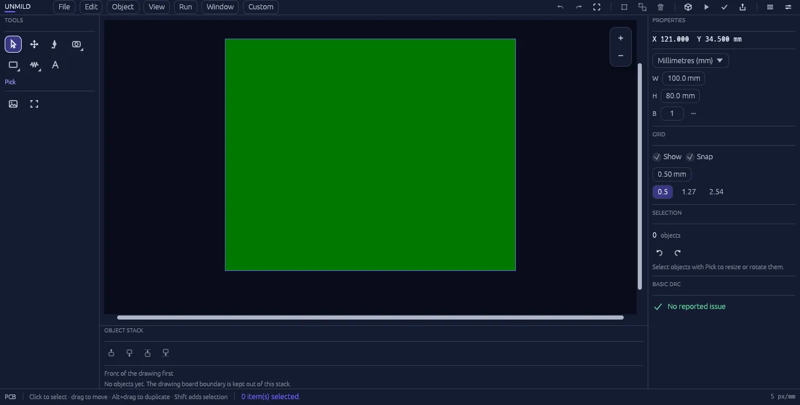

Shape the hardware
Place components, route copper, define the board profile, control layers, and work with direct, measurable precision on the canvas.
UNMILD is built around one belief: hardware deserves tools that feel as tangible as the things they create. We make products for designing, programming, testing, and bringing electronics to life.
“Unmild” is the opposite of soft. It is a name for hardware: physical, precise, and built to do real work. UNMILD products turn complex engineering work into a clear path from concept to a functioning system.
The UNMILD collection begins with a serious PCB design environment: one product that keeps layout, physical review, verification, and manufacturing output in a disciplined project workflow.
A professional PCB design environment built for engineers who need clarity from the first placement to the final fabrication handoff.

Unmild Designer is built around the complete job: define the hardware, review it as a physical system, then hand it off with confidence.
Place components, route copper, define the board profile, control layers, and work with direct, measurable precision on the canvas.
Use Live 3D and Run to keep the physical board, component state, readings, and reported issues in view before release.
Bring design checks, Gerber artwork, drilling data, documentation, and organized manufacturing output together when the design is ready to move forward.
Need help with a product, have feedback, or want to follow what comes next? Reach UNMILD directly.
Questions, installation help, technical feedback, and support for UNMILD products.
unmildsupport@gmail.comProduct visuals, hardware moments, and feature highlights from UNMILD.
@_unmild →Product news, launch updates, and future UNMILD work.
@_unmild →